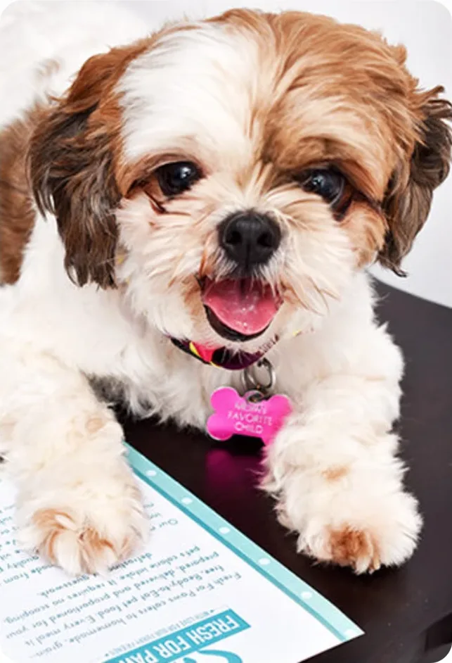

#ChooseFreshForPaws
Bowls licked clean.
Real food, ready to eat, made in Delhi NCR. Join the dogs and cats who already switched.
Build my dog's box
Fan favourites
#ChooseFreshForPaws

Started for Vanilla
Srishti Bhatia, certified canine & feline nutritionist, has been cooking for dogs since 2018.
Our storyQuestions
Is it really ready to eat?
Yes. No scooping, no defrosting, no guesswork: open the pack and serve. (Storage and shelf life per recipe: to confirm.)
How much should my dog eat?
Build a plan: answer three questions and you get a daily portion for your dog.
Where do you deliver?
Delhi NCR, Gurugram and Noida today. (Zones and slots: Srishti to confirm.)
Who makes the food?
Srishti Bhatia, a certified canine & feline nutritionist, who created every recipe herself after almost two years of research. She started Fresh For Paws on 13 June 2018, inspired by her dog Vanilla.
Can I switch from kibble?
Yes. Mix it in over 7 to 10 days. (Transition guide: Srishti to confirm.)